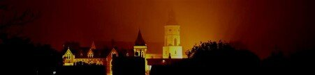
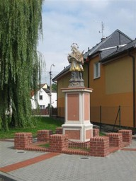
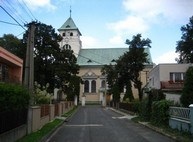
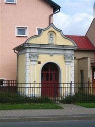
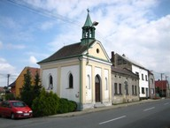
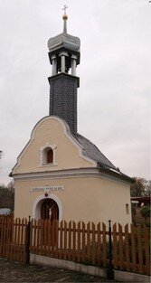
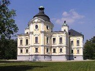

Kostely a kaple
Kostel sv. Bartoloměje tvoří dominantu města viditelnou desítky kilometrů. Nejstarší částí stavby je bílá renezanční věž z 1. třetiny 16. století. Ve věži je umístěná kamenná křtitelnice z té doby a dva cenné zvony ze 17. století, které nechal ulít tehdejší vlastník panství Jakub Eichendorff. Neogotické trojlodí s neúplnou příčnou lodí (transeptem) je pak dílem významného místního stavitele Josefa Seyfrieda (1865-1923), stejně jako celý areál kolem kostela, který tvoří fara,bývalý klášter Sester Božího srdce - dnes sídlo Městského úřadu Kravaře - a ohradní zeď se vstupními branami. Celý areál vznikl na přelomu 19. a 20. století. V roce 1894 byl položen základní kámen nového kostela, který posvětil místní farář Ignatz Maiss. Stavba, již zdaleka poutající pozornost, byla dostavěna v roce 1896. Dne 15. listopadu 1896 byl přivítán místním farářem a představiteli obce arcibiskup Theodor Khon a za přítomnosti téměř 7000 občanů místních i z okolí uskutečnil akt konsekrace kostela, zasvěceného sv. Bartoloměji.
Podobný církevní komplex s monumentálním kostelem postavil Seyfried i v nedaleké obci Sudice. Nejstarší částí stavby je bílá renezanční věž z 1. třetiny 16.
Celá historie zde.
Poblíž východní brány do areálu kostela stojí pískovcová socha sv. Jana Nepomuckého z r. 1730, významný doklad barokního sochařství ve Slezsku. Mnohem novější je dřevěné sousoší „U omy“ umístěné také v blízkosti církevního areálu. Autorem je současný místní řezbář pan Horst Benek a plastiku z jasanového dřeva daroval městu v roce 2004 u příležitosti 780 let od první písemné zmínky o Kravařích.
Kostel sv. Mikuláše a Nanebevzetí Panny Marie v Kravařích Koutech je novější. Stavební projekt jednoduchého, moderního slohu, 22 m dlouhé, 12 m široké a 9 m vysoké posvátné budovy s kapacitou 850 osob vyhotovil opavský stavitel Albert Schmel, dozorování stavby byl pověřen koutecký rodák J. Luzar. Oltáře zhotovili bratři Riegrovi z Krnova. Stavěn byl od 27.7.1927 do 16.8.1928, kdy byl zkolaudován. 27.5.1928 byly pro něj děkanem Johannesem Jureczkou vysvěceny tři zvony, zhotoveny dílnou p.Manouška: Nanebevzetí p.Marie (500 kg), sv. Jan Křtitel (320 kg) a sv. Izidor (225 kg). Bohužel, v r.1942 byly dva větší zvony zrekvírovány pro válečné účely. K slavnostnímu posvěcení kostela došlo 23.září 1928 biskupem Schinzlem místo zaneprázdněného pomocného biskupa Stavěla.
Až do r.1887 měla obec jen jednu dřevěnou kapli, která stála uprostřed obce. Zvonilo se v ní umíráčkem a Anděl Páně. V r 1887 postavila obec na tzv. Vršku větší masivní kapli, která byla vysvěcena 12.dubna téhož roku. Stará dřevěná kaple byla v r.1894 stržena a na jejím místě postavena zděná, na památku primicí dvou mladých mužů z obce. Mše ani v jedné kapli nebyly slouženy. Ve větší z nich byly v postní době drženy křížové cesty, a to staršími obyvateli, pro které již byla cesta do farního kostela namáhavá. Každou neděli v postní době měl farář Peterek (1832-1867) v sále p.Urbische kázání pro staré lidi.
Při pozemkové úpravě katastru bylo rozhodnuto o umístění případného budoucího hřbitova, na kterém by měla stát i větší kaple, a sice za selskými stodolami na tzv. Záhumní.
Kaple sv. Floriána na Opavské ulici poněkud zaniká v řadové zástavbě. Kaplička má čtvercový půdorys, její průčelí zdobí dva antické sloupky s hlavami andílků, ve štítě je umístěn výklenek se soškou sv. Floriána - ve Slezsku velmi oblíbeného patrona hasičů - a letopočet 1772. Kaple je pěkným dokladem slezského baroka.
Kaple sv. Jana Křtitele v Koutech postavena v r.1887 na tzv. Vršku a vysvěcena 12.dubna téhož roku. V postní době zde byly staršími lidmi, pro které již byla cesta do farního kostela v Kravařích namáhavá, konány křížové cesty. Ve věžičce kaple byl umístěn zvon ulitý v r.1896 ve Vratislavi (Breslau) Albertem Geitnerem. Sloužil (po stavbě kostela) jako poplachový zvon při požárech a vyzváněl také při průvodech o Božím Těle. V roce 1950 byl zvon přemístěn do věže kostela, kde sloužil jako umíráček.
Kaple sv. Michala je drobná zlidovělá církevní stavba postavená roku 1822 a kulturní památkou je od roku 1963. Kaplička se zaobleným nárožím a sedlovou střechou má štítové průčelí s vykrajovaným okrajem a půlkruhovým oknem i vstupem, čímž napodobuje slezský barokní sloh. Rok postavení a vysvěcení kaple lze vyčíst v plastické pásce nad portálem. Stavba je ojedinělá díky své dosti vysoké, šestihranné sanktusové věžičce s lucernou, cibulkou a křížkem. Kaple je významným místopisným prvkem Dvořiska, neboť dokládá jeho původní zástavbu. Každým rokem se zde slaví „odpust“ – posvícení u příležitosti svátku archanděla Michaela, který připadá na 29. září.
Součástí zámku v Kravařích je i zámecká kaple, zasvěcena archandělu Michaelovi. Je postavena ve stylu pozdního baroka, překlenuta značně vysokou kopulí nesenou pilíři. Stropní freska představující Nanebevzetí P. Marie, s alegorickými výjevy čtyř světadílů, postavami církevních otců, evangelistů a mučedníků, je dílem Františka Ignáce Eckesteina, jednoho z hlavních představitelů barokní nástěnné malbě na Moravě a ve Slezsku. Autorem oltáře, tvořeného po stranách andílky držícími obraz Pád andělů, byl určen Josef Stern.
Další kapličky, kříže a sochy

Malá kaple postavena v r.1899 na místě stržené staré dřevěné kaple.
Pomník padlých v 1.světové válce
Kříž z r.1908 u křižovatky Hlučínská-Olšinky
Kříž na Kostelní ulici
Některé informace čerpány z www.infocesko.cz